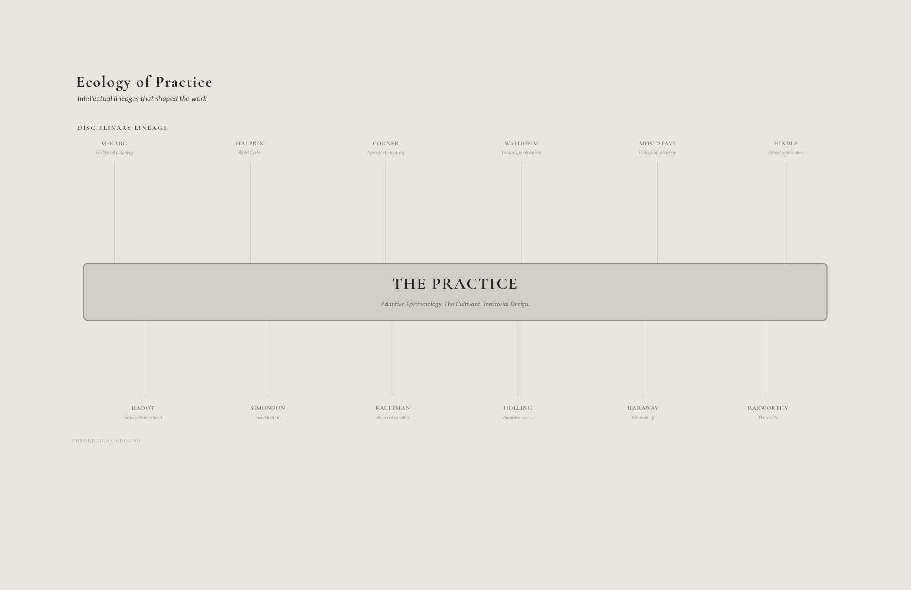
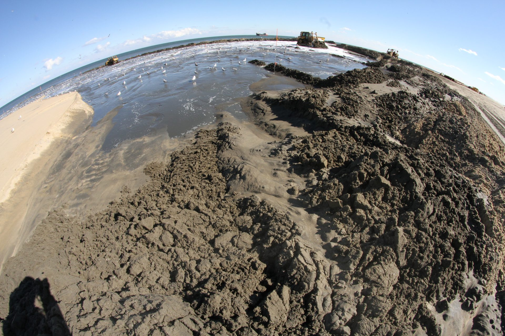

Adaptive Epistemologies and Neo-Wilds — Chapter 04
Adaptive Epistemologies and Neo-Wilds
Chapter 04
Ecology of Practice
This chapter maps the ecology of practice within which my research is
situated and through which it has been produced. Rather than treating
the subsequent project chapters as the work of a single, isolated
author, I frame them as outcomes of an extended set of communities of
practice that span landscape architecture, architecture, engineering,
ecology, and environmental science (Lave and Wenger 1991; Wenger 1998).
The chapter traces how collaborations with design academics,
professional offices, scientists, engineers, and public institutions
have provided not only sites and problems, but also methods, tools, and
languages that condition what kinds of questions I can ask and what
kinds of futures I propose. In doing so, it positions my practice-based
PhD as emerging from a hybrid field in which dredging logistics,
geomorphic modeling, responsive sensing, territorial design, and
adaptive infrastructure are continuously negotiated. This ecology of
practice is both empirical and methodological as it documents the
networks through which the work travels and establishes the
transdisciplinary ground on which the later chapters that are focused on
specific projects and key concepts should be read.
When I describe my work as an “ecology of practice,” I extend the
language of communities of practice into the relational and multi-scalar
realm of territorial design. A community of practice, in Lave and
Wenger’s sense, is not just a group of people with similar expertise. It
is a configuration of mutual engagement, a joint enterprise, and a
shared repertoire of concepts, tools, and stories that evolve through
doing things together (Lave and Wenger 1991; Wenger 1998, 2000).
My own ecology of practice spans multiple overlapping communities
from design academics experimenting with sediment logistics and
technological landscapes to professional offices testing speculative
ideas against real projects to scientists and engineers building
physical and computational models and to institutions whose regulations
and infrastructures quietly frame what can be designed. These are not
separate worlds. They are patches in a single, shifting mosaic, an
anthropogenic biome of disciplinary cultures, to borrow Erle Ellis’ term
for hybrid socio-ecological systems (Ellis and Ramankutty 2008; Ellis
2011).
Writing this ecology autoethnographically means that I do not pretend
to stand outside it. I am implicated as collaborator, co-author,
consultant, and critic. Autoethnography, understood as the systematic
analysis of personal experience to understand cultural experience
(Ellis, Adams, and Bochner 2011; Adams, Holman Jones, and Ellis 2015),
provides one of the methodological threads of this chapter and my own
trajectory, anxieties, and enthusiasms become data about how landscape
knowledge is made.
The ADAPTr program (Architecture, Design and Art Practice Research),
developed by Blythe and Stamm through the European Commission Marie
Curie Initial Training Network, provides a structural parallel to the
ecology of practice documented here. Their model treats each
practitioner’s comprehensive body of work as a singular case study
operating across three orders of knowledge. Specific projects read
through research-relevant perspectives constitute the first order.
Transformations and shifts visible across the full body of work
constitute the second. And the positioning of the individual case study
within a field of adjacent, parallel, or contrasting practices
constitutes the third (Blythe and Stamm 2017, 56). This three-order
structure maps onto what the refraction method produces in this
dissertation. Chapter 05’s four phases of tool-making constitute
second-order knowledge, transformations legible only across the
trajectory. The ecology of practice documented in this chapter
constitutes third-order knowledge, the field of adjacent practices
within which the work’s claims become testable and its contributions
become visible.
Blythe and Stamm’s concept of “transformative triggers,” specific
explanatory gaps identified during the research process that provoke new
projects designed to close those gaps through a transformed practice
(Blythe and Stamm 2017, 59), describes the mechanism by which the
tool-making trajectory in Chapter 05 actually advanced. When the Kinect
sensor failed to resolve the depositional layer in the
Sedimachine experiments at LSU, the failure was a
transformative trigger. It did not merely identify a technical
limitation but opened a question about what the instrument’s resolution
was suppressing, a question that could only be answered by building
different tools. Each phase transition in Chapter 05, from seeing to
touching, from touching to coding, from coding to letting go, was
triggered by a gap that the previous phase’s tools could not close.
What follows is not a neutral survey but a narrative map of how
particular collaborations and projects have shaped my methods and
concepts, and how, in turn, those methods and concepts participate in
broader disciplinary shifts.
Sediment,
Technology, and Territorial Interfaces
The
Dredge Research Collaborative: Sediment as Medium and Method
One of the most formative communities of practice in this ecology is
the Dredge Research Collaborative (DRC), specifically Rob Holmes, Brett
Milligan, Sean Burkholder, Brian Davis, and Justine Holzman, among a
shifting cast of designers, artists, and advocates. Together, they have
spent more than a decade treating dredging not as an invisible
engineering routine but as a cultural, political, and designable
infrastructure.
The DRC’s recent book Silt Sand Slurry: Dredging, Sediment, and
the Worlds We Are Making consolidates this work, presenting
dredging as a “visually rich investigation into where, why, and how
sediment is central to the future of America’s coasts,” and as an
“unseen infrastructure” that “shapes and enables modern life.” The book
is less a monograph than a collective atlas of fieldwork, mappings, and
speculative projects, ports, disposal sites, eroding barrier islands,
and vaguely defined “placement areas” that quietly organize coastal
futures.
Within this collaborative, my role has primarily existed as an
invited participant to co-produce within that shared repertoire. My
methods working with DRC are research-through-design, developing
workshops that explore nascent, responsive infrastructural practices,
and staging public events as a primary means of inquiry (Zimmerman,
Forlizzi, and Evenson 2007; Lenzholzer, Duchhart, and Koh 2013).
Autoethnographically, the DRC’s workshops and field investigations
produced a specific methodological conversion. Before this relationship,
I understood dredging as background logistics, something that happened
to rivers and harbors to keep them functional. The DRC’s sustained
attention to “placement areas,” the sites where dredged material is
deposited, often vaguely defined in regulatory documents, often on the
urban edge, often in the process of becoming something that no one has
yet named made visible a design problem that the academic literature had
not framed as one.
The DRC showed me where to look. The geomorphology table research at
REAL, and later at UVA, can be understood as an attempt to develop
instruments for what I had learned to see at those sites and the
choreography of sediment as a medium of territorial formation, not a
waste product of navigation maintenance.
The Thresholds installation (2006) had already demonstrated
this principle in miniature before the DRC made it legible at
territorial scale. People walking through the atrium did not know they
were performing landscape. The camera read them as perturbations in the
contrast field and the software turned those perturbations into
topographic events, momentary ridges, valleys, migrating peaks that
appeared and dissolved as each person moved. In this view the occupants
become part of the territory. The isolines represent the interaction
between datum, occupant, and light, and any of those three can be
understood as the landscape depending on which is taken as the fixed
reference. The occupants were not designed into the system. They entered
it and, through the logic of the sensing apparatus, became constituents
of the territory the installation produced.
Technological
Genealogies: Richard Hindle and Patent Landscapes
In parallel with my sediment work is my ongoing engagement with
Richard Hindle’s research into patents and landscape technologies.
Hindle mines patent archives to reconstruct the histories of
infrastructural devices such as green roofs, irrigation systems, coastal
defense, and retaining structures, often revealing how technological
imaginaries and environmental control fantasies are encoded in
intellectual property. His contributions show how patents form a spatial
archive of environmental design, including unbuilt or forgotten
artifacts.
Methodologically, Hindle’s work offers a form of design-inflected
historiography. Before speculating about new sensing infrastructures or
hydro-mechanical interventions, I have learned to look back and trace
how similar systems have been framed, which problems they claimed to
solve, and what hidden assumptions they carried about nature and
control. This historical work complements my field and modeling work,
grounding my speculative projects in a longer genealogy of environmental
technologies.
In autoethnographic terms, learning from Hindle shifted how I enter
technical conversations. I am less likely to accept a new technology at
face value. Instead, I instinctively ask what is the historical lineage
of this device? What failure modes and fantasies are already baked into
it?
Territorial
Interfaces: Alexander Robinson and Owens Lake
Alexander Robinson’s work at the Landscape Morphologies Lab and the
Office of Outdoor Research extends my focus from sediment logistics to
broader territorial interfaces. His book The Spoils of Dust:
Reinventing the Lake That Made Los Angeles examines Owens Lake,
once California’s third-largest inland water body, drained to serve Los
Angeles, as a hybrid of infrastructural experiment, environmental
justice site, and public spectacle (Robinson 2018).
Robinson’s work changed how I understand the function of maps and
models in my own practice. Before this engagement, I treated
visualization as a communication tool, a way of explaining design
decisions already made. Robinson’s Owens Lake work demonstrated that the
map is itself a design act, determining what counts as visible,
negotiable, or inevitable. That reorientation runs directly into the
Technogeographies argument in Chapter 07.
Computational Communities
The ACADIA community (Association for Computer Aided Design in
Architecture) forms another crucial node in this ecology, not as a
stylistic influence but as the context in which I came to understand
computation as environmental practice rather than formal technique.
Working alongside Jason Kelly Johnson and Nataly Gattengo at Future
Cities Lab, whose responsive installations couple sensing with urban
atmospheres, and Dana Cupková, whose material computation foregrounds
thermodynamic and climatic consequences, shifted my orientation from
what computation can represent to what computation can do within a
living system.
The books produced within this ecology of practice deserve a moment’s
attention as knowledge contributions rather than merely community
artifacts. Digital Drawing for Landscape Architecture (2010,
with Wes Michaels) addressed a specific crisis, the profession had
adopted digital tools wholesale from adjacent disciplines, but the
representational conventions those tools encoded such as vector
precision, object clarity, architectural rendering conventions were
inadequate to landscape’s constitutive concerns with indeterminacy,
atmosphere, and temporal change. The ASLA Award of Excellence jury
recognized the contribution, praising the book as a contemporary and
accessible treatment of digital drawing for the discipline. What that
recognition named was a representational void the book had filled. You
cannot design what you cannot represent and the book changed what
landscape architects could see.
The drawing techniques in Digital Drawing for Landscape
Architecture were calibrated to landscape’s indeterminacy, temporal
depth and atmospheric qualities. By choosing tools that make those
properties legible, the book shaped what the territory could be known
through. The composite drawing became an epistemic commitment. Landscape
is heterogeneous, no single representational engine can capture it, and
practitioners must work across multiple modes to reveal what any single
instrument obscures.
Codify: Parametric and Computational Design in Landscape
Architecture (2018, edited with Adam Mekies) made a stronger
argument, that landscape architecture is not adopting computational
methods from architecture and engineering but is uniquely positioned to
define an emerging domain where ecology, urbanization, and technology
converge. Richard Hindle’s response, “Codify convincingly
argues that Landscape Architecture is uniquely positioned to define this
sector of technology, and in the process redefine itself” names the
disciplinary ambition. These publications are not the outputs of this
ecology of practice. They are interventions within it, reshaping what
questions the community can ask.
I write tools to embed my landscape claims in code. Selecting
variables, thresholds, and outputs constitutes the same design decisions
I make when drawing a planting plan. By coding, I make the decision
structure explicit and reproducible. I teach students to write their own
tools so they understand the epistemic claims embedded in them. Using a
black-box tool abdicates that responsibility. The territory then
operates on unknown assumptions. Tool-making therefore becomes a
research practice that holds me accountable for the epistemological
infrastructure of my work.
In ACADIA and related venues, prototypes, scripts, and installations
are explicitly framed as research-through-design artifacts, producing
designed objects that embody and generate theoretical insights
(Zimmerman, Forlizzi, and Evenson 2007; Zimmerman, Stolterman, and
Forlizzi 2010). My own autoethnographic record of conference papers,
workshop notes, and moments of failure captures the discomfort and
excitement of exposing unfinished tools and ideas in public, and
watching them be adopted, modified, or critiqued by others.
Publishing
Communities and Collaborative Authorship
A distinct thread within this ecology of practice runs through the
books and essays produced with collaborators whose intellectual
contributions have been formative rather than merely additive. These are
not publications that gathered existing knowledge but relationships
through which new knowledge was made.
Wes Michaels and I arrived at Louisiana State University in the same
year, hired as assistant professors, having come through the same
post-professional MLA cohort at the Harvard Graduate School of Design.
The collaboration that produced Digital Drawing for Landscape
Architecture (2010) was built on complementary strengths, his
grounding in design practice, my orientation toward computation and
technology, and on the shared conviction that the profession needed
representational tools calibrated to its own material concerns, not
borrowed wholesale from adjacent disciplines. The book is now in its
second edition and remains a textbook across landscape architecture
programs. That continuity matters. It is evidence that the
representational void the collaboration identified was real, and that
the methods developed to fill it have proven transmissible across
generations of practitioners.
Writing the book forced us to articulate techniques that had emerged
from practice, turning tacit knowledge into explicit language. This act
of making the practice legible generated knowledge that circulated
through the discipline, changing how others draw and therefore how they
think. The gap between the unspoken studio knowledge and the published
articulation became the source of new understanding, demonstrating that
the ecology of practice produces epistemic growth through the very act
of writing.
Coupled ecologies first took shape along the Mississippi River. In
2009, Kristi Cheramie, Jeffrey Carney, and I drove the river from
Venice, Louisiana to Lake Itasca over several days. We were assistant
professors at Louisiana State University, and the trip operated as
fieldwork and as a working argument that the river could not be
understood through its parts. Levees, locks, dredge channels,
agricultural grids, and bridge crossings were not separate engineering
products. They were a continuous infrastructural skin negotiating a
watershed that refused to stay in place. The collaboration that emerged,
submitted to Pamphlet Architecture in 2009 under the title Up River,
treated five sites along the corridor as instances of a single condition
where infrastructure had become indistinguishable from the territories
it had been built to manage. Tensile City at Minneapolis-St. Paul,
Agri-Power at Dubuque, Switch-Thru-Knot at Keokuk, Force Field at Cairo,
and Pile Hive at Venice each posited a more-than-prosthetic relationship
between machine and landscape. The frame we used was the cyborg, a
system that operates with the benefits of natural and manmade forces and
refuses any clean distinction between them.
The project was redeveloped as Cyborg Landscapes when Matthew Seibert
joined the work as a Master of Landscape Architecture student at LSU,
and the expanded version circulated through KERB and a 2014 feature in
Fast Company, where the vocabulary of latent strata, pressure, flux, and
the cyborg landscape began to project conceptual framings beyond its
origin. Those terms compress what later chapters develop at length. The
river is not a thing but a relationship between substrates and forces.
Infrastructure is not a fix but an ongoing negotiation. Design's task is
not to terminate flux but to participate in it. The framework that
earlier carried the name cyborg ecologies appears in this dissertation
as coupled ecologies, a renaming that followed a conversation with
Nicholas de Monchaux about the optimization connotations the cyborg
figure had accumulated. The argument the trip produced has remained
intact across that change of name. The Mississippi taught me to read
landscape as a field of negotiated dependencies, and to design
infrastructure as a participant in those negotiations.
Fort Proctor is an unfinished pre-Civil War coastal fortification on
Lake Borgne now stranded offshore, the marsh that once held it gone, the
structure standing in open water as a static datum in a dissolving
terrain. Ursula Emery McClure, then in the LSU School of Architecture,
structural engineer Michele Barbato, and I led an interdisciplinary
research project on the fort. The work proceeded under the joint
frameworks of the Historic American Buildings Survey and the Historic
American Landscapes Survey, funded by the National Park Service Historic
Preservation Fund and the LSU Coastal Sustainability Studio, and
produced measured drawings, photogrammetric documentation, and
structural analyses now archived at the Library of Congress. What the
survey methods could not express was the condition driving the
documentation. The structure was static. The landscape around it was
dissolving at a measurable rate. The temporal animations Audrey Cropp
help to develop for the project compressed subsidence records, sea-level
data, and structural change into a single legible narrative, an explicit
response to the limits of static archival representation. McClure and I
argued in the 2013 essay on conditional preservation that sites of this
kind cannot be documented under preservation's standard temporal
assumptions, where a building is fixed and the landscape forms a stable
backdrop. The relationship between structure and ground needs to be the
unit of preservation, recorded as a process rather than a state. The
Fort Proctor work taught me to design archival representations as
instruments calibrated to disappearance.
Justine Holzman arrived as a student, became a research assistant,
and became a co-author. The arc of that relationship spans nearly a
decade and its intellectual contribution to this dissertation is
specific and significant. Her framing of the Modify chapter in
Responsive Landscapes (2016) opened a conceptual space that I
had circled without naming, that actively altering an environment in
real-time constitutes a knowledge-producing act. Modification as
epistemology. The landscape changed, and the change was the data. That
insight runs as an undercurrent through everything that follows in this
dissertation.
Making invisible processes visible changes how communities experience
their territory. When perception shifts, political agency follows, not
automatically, but because what was previously unnoticed becomes
available for contestation. The distance between what a community senses
about its environment and what policy acknowledges about that
environment is where the design of responsive landscapes does its most
consequential work.
Together, Holzman and I organized the Adaptive Devices
workshop at DredgeFest Louisiana (2014), where we tested the
modify-as-knowledge intuition before the language existed to name it.
The workshop staged responsive sediment infrastructures at tabletop
scale before the argument had been formalized, before we knew what we
were demonstrating. The KERB essay “After Modify” (2015), co-authored
with Holzman, was where the formalization happened. The workshop’s
intuitions became articulated claims. And her independent chapter in
Codify (2018), published in the volume Adam Mekies and I
edited, extended the argument further, hinting at the landscape itself
as a model, a claim the dissertation later develops more fully. This is
what a community of practice looks like when it is generative rather
than merely collegial. An idea moves through a workshop, into a
co-authored essay, and returns transformed in an independent voice.
Adam Mekies represents a different but equally sustained
collaboration. Our relationship begins at Sherwood Design Engineers,
where theoretical frameworks developed in academic contexts are tested
against engineering constraints and institutional realities of
professional practice. But it extends into the intellectual register
through Codify, which we co-edited and opened together. The
Dredgefest encounter and the Codify essay are two moments in a
longer conversation about what it means to think computationally about
landscape rather than merely use computation in landscape work.
Student Communities
No account of this ecology of practice is complete without
acknowledging the communities of students whose work has been generative
rather than assistive. Three registers of relationship deserve
recognition, each producing a different kind of knowledge
contribution.
Research assistants, working at the edges of funded projects and
laboratory investigations, have extended the capacity to prototype,
test, and document. Their contributions are embedded in the technical
infrastructure of the work, in the sensing systems, the software
scripts, the image archives, often without appearing in citations or
credits.
Students in studios, seminars, and thesis work have pushed ideas into
territory the laboratory could not anticipate. The student projects
cited throughout this dissertation were not illustrations of
pre-existing frameworks but inquiries that opened new directions. Studio
work operates through a productive asymmetry. The instructor sets
conditions, but the outcomes exceed the conditions, and the excess is
where the knowledge is.
Foundation studios are typically understood as sites of pedagogical
transmission. Prototyping the Bay inverted this structure in
important ways. The Chesapeake Bay’s coastal landscapes in conditions of
active sea-level rise and ecological transition are not well enough
understood for the instructor to have answers to the design questions
the site poses. The instructor has frameworks for inquiry but not
answers, because the answers depend on ecological dynamics that are
still unfolding and on design propositions that the studio would develop
rather than transmit. The studio was a research site as much as a
pedagogical one, and the students were researchers as much as learners.
This is what the doctoral inquiry recognizes as the ecology of practice
in its pedagogical form. A community of inquiry in which the instructor
and students are learning together from the site, from each other, and
from the tension between the design frameworks the studio provides and
the site conditions that challenge those frameworks.
PhD advisees have constituted the most reciprocal relationships,
collaborations in the fullest sense, where advising and being advised
are not cleanly separable. Marantha Dawkins, whose research on climate
and landscape culminated in a co-authored paper in Prospectives
(the Bartlett BPro online journal), brought a sustained focus on
environmental justice and the political dimensions of responsive systems
that sharpened the dissertation’s own justice arguments. Xun Liu,
co-collaborator on the UVA geomorphology lab research and the Venice
Biennale’s Indeterminate Futures (2021), has been a consistent
intellectual interlocutor in the transition from responsivity to
autonomy, and co-author with Zihao Zhang and myself on a chapter in the
Routledge Handbook on Artificial Intelligence in Architecture.
Zihao Zhang, co-author on that same chapter and on the essay “Cultivated
Wildness: Technodiversity and Wildness in Machines” published in
Landscape Architecture Frontiers (2021), is the collaborator
with whom the concept of the Third Intelligence was first formally
framed, a concept that now anchors Chapter 11. That the dissertation’s
central claim about non-human agency in design emerged through
collaborative inquiry with students-become-peers is not incidental. It
enacts the argument.
Transforming REAL into a pedagogical platform required making the
method transmissible. Teaching forced the explicit articulation of
knowledge that had remained tacit within the lab’s own practice,
protocols that had developed through accumulated experience needed to be
named, sequenced, and documented before they could be shared. That act
of codification was itself a form of knowledge production, and it
reshaped who could access and influence the territory’s design by
opening the method beyond the original research team.
Theoretical Interlocutors
Beyond the Waldheim and Raxworthy framing that closes the
design-academic world, the ecology of practice that produced this
dissertation has been shaped by a wider set of theoretical interlocutors
whose ideas and relationships have been equally formative.
Christophe Girot’s work sits at the intersection of terrain
perception and digital computation. His more recent work with point
clouds and digital terrain at ETH Zürich argues that new sensing
technologies can recover attentiveness to the specificity of place that
homogenized ecological planning methods have suppressed. The
Codify foreword he contributed names this directly. Coding, at
its best, is a return to the need to inscribe essential meaning in our
daily lives on the ground we tread upon, a counter to the flattening of
landscape into two-dimensional scientific abstraction. Girot’s
insistence that computational methods must remain answerable to
terrain’s material and cultural specificity has been a persistent check
on the more totalizing ambitions of responsive systems thinking.
Elizabeth Meyer’s work on aesthetics and performance in landscape
architecture grounds this dissertation’s understanding of what design is
for. Her argument, developed across “The Expanded Field of Landscape
Architecture,” “Sustaining Beauty,” and related essays, is that
experiential and ecological dimensions of landscape are not separable.
Aesthetic experience is not decoration applied to ecological performance
but the medium through which ecological value becomes legible and
meaningful to those who inhabit a place. This insistence on the
constitutive role of experience runs beneath this dissertation’s concern
for cultivated wildness and multi-species co-authorship. If the
landscape’s autonomy is invisible or inert to human perception, it
cannot function as a site of ethical or epistemological encounter.
Robert Pietrusko and I overlapped at Harvard during the years of the
REAL lab’s development. His argument, that data does not neutrally
record the world but produces the categories through which the world
becomes known and designable, provided theoretical grounding for the
sensing work at REAL and UVA. Together we developed a proposal for an
MDeS program at Harvard focused on Data Ecologies, the design of data
acquisition, processing, visualization, and application as a coherent
disciplinary practice. The proposal was not realized, but the
conversation it required crystallized the argument that the design of
sensing infrastructure is a form of territorial design, a claim that
runs through the Technogeographies work in Chapter 7.
Nicholas de Monchaux and I were both fellows at the American Academy
in Rome, and it was there that he articulated something that reoriented
how I understood the dissertation’s central claim. That the landscape is
the medium. Not the model of the landscape, not a representation of it,
not a surrogate, but the landscape itself as the medium through which
knowledge is produced and tested. His Local Code, which uses
parametric tools to locate distributed urban remnants and design them as
collective ecological infrastructure, enacts this principle at urban
scale, treating the city’s actual terrain as the computational and
design medium rather than abstracting it into a model.
Theoretical Bookends
Two theorists quietly bookend this design-academic world with Charles
Waldheim and Julian Raxworthy.
Waldheim’s essay “Strategies of Indeterminacy in Recent Landscape
Practice,” written in the context of Downsview Park, articulates a mode
of distanced authorship in which landscape architects design frameworks
and processes rather than fixed forms (Waldheim 2001). This concept
gives a name to design with sediment logistics, AI-mediated management,
or responsive infrastructures, and I am setting up conditions, rules,
and feedback loops that will enact, over time, a design that no one
fully controls.
Raxworthy’s book Overgrown: Practices Between Landscape
Architecture and Gardening insists on gardening, continuous,
embodied maintenance, as central, not peripheral, to landscape
architectural practice (Raxworthy 2018). He argues that design cannot be
separated from the temporal, vegetal, and labor-intensive realities of
care. This insight haunts my collaborations and when I work with
geomorphological models, view a sediment test plot, or explore a heavily
engineered coastal project, I see them through Raxworthy’s lens as
complex gardens requiring long-term tending. The technologies we deploy
should not replace gardening practices. Instead, they are part of an
expanded repertoire of Wetware and Reflexive Stewardship. And this is
the place where this dissertation departs from Raxworthy toward its own
theoretical territory. The cultivant, as developed in Chapter 11, is my
extension of the viridic. Living matter is a growing medium, but the
cultivant names something further, the ongoing relationship between
designed intention and biological agency, enacted through cycles of
territorial maintenance, constituting a form of communication that
accumulates knowledge over time (Raxworthy 2018; see Chapter 11).
Design Practice Tension
Process-Driven
Urban and Territorial Design

Figure 04_06Ecology of Practice Diagram | Bradley Cantrell
In professional practice, a sustained collaboration with Stoss, led
by Chris Reed in Boston, has been where responsive strategies first
encountered the institutional resistance that academic contexts rarely
produce. My role has been as an embedded researcher and consultant in
early concept phases, introducing sensing methods and adaptive
frameworks that must survive contact with engineers, contractors, and
permitting agencies. What Stoss taught me was which ideas survive that
contact and which do not, and that the difference is rarely about the
quality of the idea. It is about whether the idea can be translated into
a deliverable that an institution can maintain. That lesson shaped the
dissertation’s insistence that adaptive epistemology must account for
institutional capacity, not just ecological complexity.
This is a form of research through practice and iterative
theorization where projects become testbeds for ideas about responsive
landscapes, infrastructural ecologies, and adaptive urbanism. These
projects weave inquiry, strategy, and design in ways that produce
knowledge about how certain strategies have agency in the world (Deming
and Swaffield 2011; Swaffield and Deming 2011).
Territorial Application of
Theory
More recently, my collaboration with Sherwood Design Engineers and in
particular with Adam Mekies in their New York office, has become a
crucial part of this ecology of practice. Sherwood describes itself as
an engineering firm working “at the forefront of ecological
infrastructure and urban systems design,” specializing in
climate-responsive planning, smart-city infrastructure, and
performance-driven modeling. Mekies, an associate principal at Sherwood
and my co-author on Codify, is a landscape architect whose work
focuses on the role of computation and construction in environmental and
ecological design.
With Sherwood, the scale and stakes of my speculative ideas
intensify. Projects range from large-scale territorial landscapes that
address coastal protection, regional infrastructures, and urban
districts, to focused studies of specific technologies. Questions I have
explored in academic and design contexts regarding sediment logistics,
AI-mediated management, or infrastructural ecologies are translated into
deliverables that must survive engineering review, public scrutiny, and
financial analysis.
The work with Sherwood has allowed me to interface with the building
of multi-scalar models that integrate hydrology, energy, and land use
with spatial design scenarios focused on adaptation. It has also
developed computational workflows in the form of scripts, parametric
models, and data pipelines that allow engineers and designers to test
variants under different environmental scenarios. In some of the most
enlightening aspects of this collaboration, scenario planning engages
governmental agencies and stakeholders by using speculations and models
to facilitate discourse around infrastructural futures.
In these projects Sherwood’s team of civil engineers, computational
designers, and landscape architects puts my theoretical developments
under stress. An idea like “cultivated wildness” must be translated into
performance metrics and management regimes, and “Wetware” becomes
technical specifications justified by ecological performance.
The NEOM consultation (2022–25) is the sharpest instance of this
theoretical stress-testing. Hydrological modeling using GeoHECRAS across
multiple storm frequencies revealed that conventional channelization of
the wadis surrounding The Line would require infrastructure widths
exceeding 200 meters with extensive hardened concrete at velocities that
made ecological function impossible. The finding was not a design
preference but an engineering limit. The alternative was a hybrid
hydrological approach that engaged managed complexity rather than
minimized it, routing water through reconceived wadi systems as holding
areas, recharging aquifers, sustaining mangroves through fluctuating
isohaline zones, an outcome demanded by the project’s constraints rather
than imposed by theory.
This is the methodological contribution of professional collaboration
that academic practice cannot replicate. The concept of “managed
complexity” does not mean the same thing in a research seminar and in a
GeoHECRAS output showing 200-meter infrastructure widths. Working with
Sherwood sharpened the argument by forcing it to survive contact with
the conditions it claimed to address. The friction was productive
precisely because it was uncomfortable and it required translating
“cultivated wildness” into a language that engineers could evaluate,
which in turn required clarifying what the concept actually claimed.
Autoethnographically, my experience with Sherwood oscillates between
exhilaration and discomfort. It is heartening to see speculative
concepts about sediment as infrastructure, AI as co-designer, or
computational wildness circulate in engineering drawings and policy
briefs. It is also uncomfortable to see how quickly those concepts can
be simplified, instrumentalized, or resisted. But this friction is
methodologically generative as it forces a refinement of language,
clarifies assumptions, and confronts the institutional realities that
theoretical frameworks must navigate.
The work with Sherwood Design Engineers and Stoss is where theory
meets productive tension and where ideas formed in research are either
flattened by cost and risk or adapted and strengthened.
Co-Authoring Ecologies
AI-Mediated “Wildness”
My collaborations with Erle Ellis, a landscape ecologist known for
his work on anthropogenic biomes, move my practice into new disciplinary
territory. Ellis’s classification of the terrestrial biosphere into
human-modified biomes makes visible the extent to which ecological
patterns are already shaped by long-term human land use (Ellis and
Ramankutty 2008; Ellis 2011).
In joint projects and writing, with environmental historian Laura
Jane Martin and technologist David Klein, we ask what it would mean to
design AI-mediated systems that manage these anthropogenic biomes toward
forms of perceived wildness that are orchestrating disturbance,
succession, and access patterns in ways that privilege ecological
complexity and more-than-human claims, while remaining legible to human
governance. These are speculative exercises that test how an “agent”
might govern land management decisions according to different
objectives.
The Designing Autonomy paper, published in Trends in
Ecology & Evolution, a leading journal in ecological science,
not a landscape architecture venue, is itself an artifact of this
ecology of practice. That publication required the Ellis collaboration,
the Martin collaboration, and the willingness to place landscape
architecture’s claims in a scientific journal that hadn’t encountered
them before. One of the dissertation’s arguments is that landscape
architecture is uniquely positioned to define an emerging domain at the
intersection of ecology, technology, and territorial governance and the
fact that this claim could be published and received in Trends in
Ecology & Evolution is evidence that the ecology of practice
that produced it extends beyond landscape architecture’s own
disciplinary boundaries.
The projects are instances of research through design operating at
the scale of intractable planetary issues, and design scenarios and
models are not only visualizations but narratives to interrogate how
“wildness,” control, and equity are encoded in machine intelligence.
Rivers in the Laboratory

Figure 04_05USACE dredge pipe delivering sand for beach renourishment, Virginia Beach (2013) | U.S. Army Corps of Engineers
With civil engineer Clint Wilson at Louisiana State University, my
research has evolved through the friction that emerges when speculation
and engineering come into contact. Our work overlapped within the
Louisiana State University Coastal Sustainability Studio, where a range
of projects from design competitions to historical preservation
assessments allowed me to test beginning intuitions about modeling
alongside one of the leading scholars in civil engineering.
From Wilson’s standpoint, physical models are aimed at understanding
and predicting geomorphic behavior under different flow regimes and
engineered configurations. From my point of view, they are generators of
design heuristics through tangible testing of river cross-sections,
levee alignments, cut-off channels, and sediment diversions,
metaphorically sketching with water and sand.
The Sedimachine experiments at LSU (2012) crystallized this
distinction. When the Microsoft Kinect depth sensor failed to resolve
the depositional layer as the sediment was too thin for the instrument’s
resolution to capture meaningful topographic variation, Wilson and I
drew different conclusions. From a hydraulic engineering standpoint, the
failure indicated a technical limitation requiring either better
equipment or a different experimental setup. From my standpoint, it
indicated something else in that the plexiglass substrate and controlled
flow conditions were producing phenomena at a spatial scale that
exceeded the instrument’s resolution, which meant that the sediment
choreography must rely on the expression of the outcome (morphological
results) as pattern rather than particle. The failure redirected
subsequent research toward the EmRiver geomorphology table and toward
ultrasonic range-finding and image analysis as complementary sensing
modes.
This interpretive divergence is not a miscommunication between
disciplines. It is how communities of practice with different purposes
produce different knowledge from shared material. The ecology of
practice depends on this divergence remaining in productive tension
rather than resolving toward either purely scientific or purely design
purposes. The geomorphology table research at REAL and UVA has
maintained this tension deliberately, the table is not a hydraulic
engineering instrument, but it draws on hydraulic engineering knowledge
to generate landforms that are read as design material.
The methodology aligns with research through designing, except that
designing is delegated to physical processes (Lenzholzer, Duchhart, and
Koh 2013). The models produce time-based traces in the form of photos,
videos, and point clouds that are aligned with scientific data to
produce design material. Reading them together, Wilson is looking for
predictive patterns and scaling laws while I am looking for emergent
landforms that might host futures for settlement, habitat, or public
access.
Geomorphology and Design
Labs
With geomorphologist Ajay Limaye at the University of Virginia, I
co-developed research that pairs geomorphic modeling with design
experimentation. Limaye’s work uses numerical and physical models to
understand channel networks, delta morphodynamics, and river
planforms.
During our work together, the collaboration aimed to build a stable
workflow where design students engage directly with geomorphic models,
modifying boundary conditions, exploring interventions, and interpreting
outputs as design prompts. This led to the creation of physical models
and computational tools that unpack assumptions about settlement
patterns, infrastructure, and ecological restoration in terms of
sediment budgets, flow regimes, and morphological thresholds.
The collaboration was, in effect, a designed community of practice,
with student research assistants at both undergraduate and graduate
levels and where geomorphologists, landscape architects, and students
learn to wield cross-disciplinary tools and methods. There is an
insistence in practice-based methods that landscape research should
operate across the case study, lab experiment, and design research
(Deming and Swaffield 2011), and this collaboration is a clear
instantiation of that insistence.
Boundary Encounters
My engagement with institutions like the U.S. Army Corps of
Engineers, The Nature Conservancy, and the Environmental Protection
Agency is more episodic but no less formative. These agencies manage and
regulate many of the landscapes where my work has relevance. Working
with them means reading dredge management plans, environmental impact
statements, and design guidelines not as neutral technical texts but as
design and governance documents whose assumptions shape what can be
built. It means participating in workshops, stakeholder meetings, and
site visits where community concerns, engineering constraints, and
design ambitions collide. And it means producing what Star and Griesemer
(1989) call boundary objects, maps, scenarios, and diagrams robust
enough to maintain common identity across professional cultures yet
plastic enough to serve each discipline’s purposes. These are
emotionally charged spaces where power, frustration, and institutional
memory are palpable. My sense of caution, hope, or skepticism in these
rooms is part of the research. It shapes the questions I ask and the
compromises I am willing to entertain (Luz 2000). These institutions
function as boundary partners rather than core communities, places where
the repertoires developed with the DRC, ACADIA, Stoss, Sherwood, Ellis,
Wilson, and Limaye are tested against formal governance systems
(Wenger-Trayner and Wenger-Trayner 2014).
The ADAPTr model also reframes how communities of practice function
in practice-based research. Rather than treating them as static
disciplinary backgrounds, Blythe and Stamm describe them as “highly
dynamic, and varied to the point where the researcher may attribute
variable communities of practice to different individual projects within
the body of work” (Blythe and Stamm 2017, 58). The community of practice
that shaped the Sedimachine at LSU, consisting of hydraulic
engineers, sediment scientists, and geomorphologists, is not the same
community that shaped REAL at the Harvard GSD, which drew on
computational designers, ecologists, and interaction designers. Each
project within the ecology of practice documented here carries its own
community, and the practitioner’s movement across these communities is
itself a form of knowledge production. What Blythe and Stamm call the
practitioner’s capacity to “constellate,” to operate in public modes
beyond the stereotype of the solitary creative individual, is what makes
the ecology of practice an epistemological structure rather than a
biographical one (Blythe and Stamm 2017, 60).
Situating the Ecology of
Practice
The ecology of practice documented in this chapter participates in
several disciplinary shifts simultaneously. Classical civil engineering
has been shaped by an ethos of control, levees designed to historical
flood stages, rivers straightened to maximize conveyance. My
collaborations with Wilson, Limaye, Sherwood, and the Corps participate
in a gradual reorientation toward adaptive and process-based
infrastructures, one in which physical models are read as both
experiments and design sketches, and territorial propositions are
evaluated on socio-ecological criteria alongside hydraulic metrics
(Pickett et al. 2001, 2011). Within landscape architecture, the work
extends Bélanger’s argument that landscape is a synthetic medium capable
of organizing flows of water, waste, energy, and capital (Bélanger 2009,
2016) by treating sediment itself as infrastructure and infrastructure
as landscape. It extends Waldheim’s strategies of indeterminacy (2001)
into adaptive sediment regimes and responsive coastal systems. And it
extends Allen’s concept of field conditions (1999) into the literal
fields of sensor arrays, diversion grids, and robotic infrastructures
that the later chapters document. Ecologically, the work is grounded in
Ellis’s anthropogenic biomes (Ellis and Ramankutty 2008) and Pickett’s
patch dynamics (Pickett and White 1985), frameworks that treat nearly
all of the landscapes engaged here as hybrid socio-ecological mosaics at
different stages of disturbance and succession. The ecology of practice
is an autoethnography of working inside those mosaics, using design to
steer trajectories rather than to reset baselines.
If the practice is the research instrument, then what exactly has
the practice done? What is the accumulated body of work, and how does
each project build on the one before it? What were the instruments, the
provocations, the failures that redirected the inquiry? And what theory
has the practice been enacting all along?